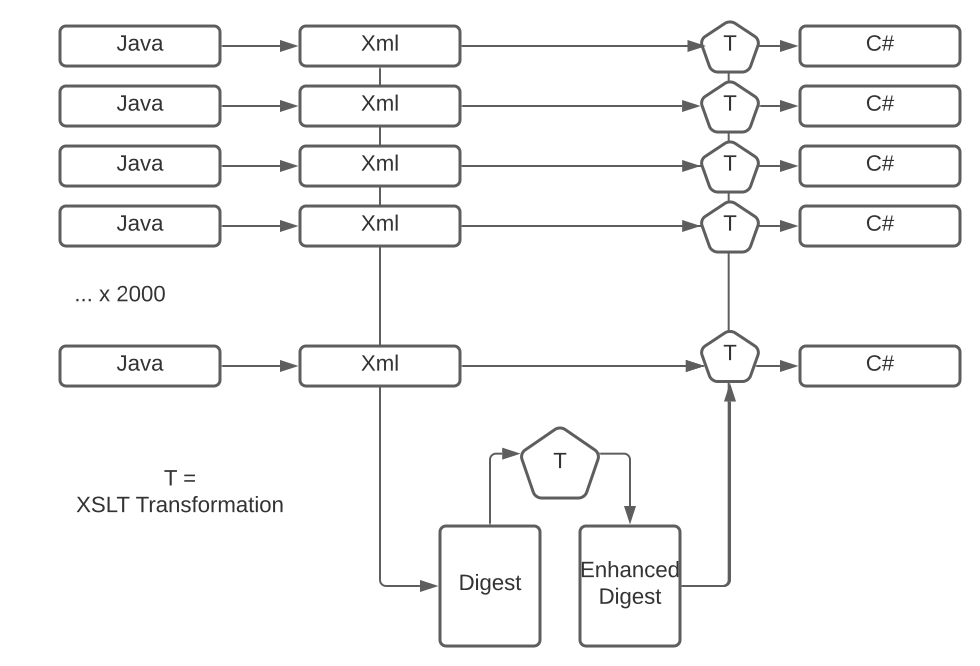

The overall structure of the transpiler is shown below:
|  |
Let's explain this:
On the left, we have 2000+ Java modules.
These are converted to an XML representation by applying the JavaParser, and serializing the resulting parse tree as XML.
An XSLT transformation takes all the XML files as input and generates a digest of the class and method hierarchy.
A further XSLT transformation enhances the digest by analyzing which methods override each other.
Each of the 2000+ XML modules is then converted to C# by applying an XSLT transformation, which takes the enhanced digest file as an additional input.
The first stage of conversion is to parse each Java module and generate an abstract syntax tree, which can be serialized as XML. For this purpose we use the open-source JavaParser product[9].
JavaParser generates the parse tree as a hierarchy of (not very well documented) Java objects.
It also includes the capability to serialize this hierarchy as XML. We don't use its out-of-the-box
serialization however: we augment it with additional semantic information. JavaParser in fact has
two parts (originally developed independently, and still showing evidence of the fact): the parser
itself, which is exactly what it says, and the "symbol solver", which is a set of queries that can
be executed on the parse tree to obtain additional information. For example, if the raw source code
contains the expression new HashMap<>(), this will appear in the raw tree as:
<value nodeType="ObjectCreationExpr"> <type nodeType="ClassOrInterfaceType"> <name nodeType="SimpleName" identifier="HashMap"/> <typeArguments/> </type> </value>
But with the aid of the symbol solver, it is straightforward to establish that the name
HashMap refers to the class java.util.HashMap, and we output this as an additional attribute
on the tree, thus:
<value nodeType="ObjectCreationExpr"> <type nodeType="ClassOrInterfaceType" RESOLVED_TYPE="java.util.HashMap"> <name nodeType="SimpleName" identifier="HashMap"/> <typeArguments/> </type> </value>
Similarly, the symbol solver is usually able to find the declaration corresponding to a variable reference or method call, and hence to establish the static type of the variable or of the method result. I say usually, because there are cases it gives up on. It struggles, for example, with the types of the arguments to a lambda expression, for example the variable n in
search.setPredicate(n -> n.name="John")
Similarly it has difficulty with static wildcard imports:
import static org.w3.dom.Node.*;
The other problem with the symbol solver is that it can do a lot of things that aren't mentioned in the documentation: we've found some of these by experiment, or by studying the source code. No doubt there are other gems that remain hidden.
The result of this process is that for each Java module in the product, we generate a corresponding XML file containing its decorated syntax tree.
In principle we could now write an XSLT transformation that serializes this syntax tree using C# syntax.
But there's another step first. In some cases we can't generate the C# one file at a time: we need some
global information. For example, if a C# method is to be overridden in a subclass, it needs to be
flagged with the virtual modifier. Similarly, overriding methods need to be flagged as override.
We therefore need to construct a map of the entire class hierarchy, working out which methods are
overridden and which are overrides.
So the second phase of processing is to scan the entire collection of XML documents and generate a digest file (itself an XML document, naturally) which acts as an index of classes, interfaces, and methods, and which represents the class hierarchy of the application. Then (our third phase) we do a transformation on the digest file which augments it with decisions about which methods are overriding and which are virtual.
Now finally we can perform the XML-to-C# phase, implemented as an XSLT transformation applied to each of the XML documents generated in phase one, but with the digest file available as additional information.
The C# is then ready to be compiled and executed.